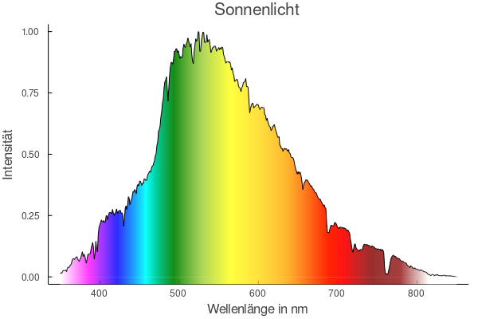
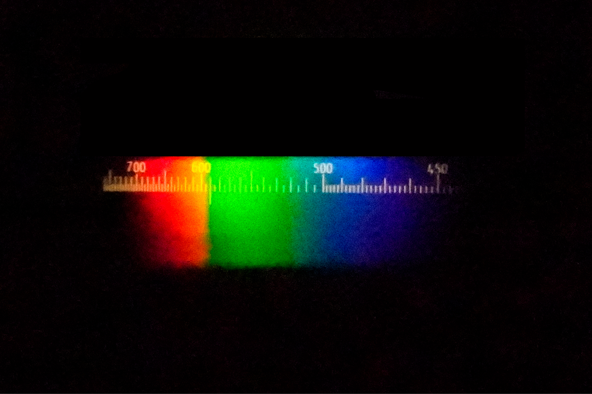

CCD-Spektrometer



Das Spektrum der Sonnenstrahlung ist kontinuierlich. Es ist im sichtbaren Bereich des elektromagnetischen Spektrums am intensivsten. Das Maximum liegt im Bereich des grünen Lichtes. Das Spektrum des Sonnenlichts entspricht etwa einer Temperatur von 6000K, was die Temperatur der Photosphäre ist. Dunkle Linien im Spektrum, die sogenannten Fraunhoferlinien, stammen von der Absorption des Lichtes durch die Gase in der Photosphäre, bei charakteristischen Wellenlängen.